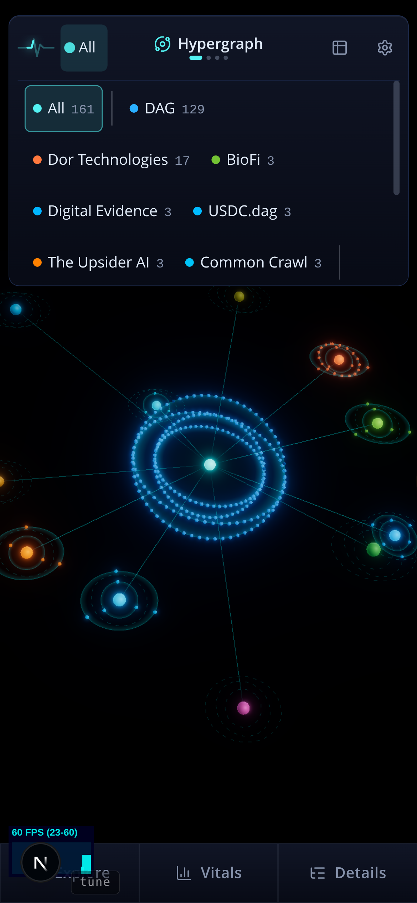

Today the strip is chips of every width wrapped into rows, with two thin vertical bars where the groups change (networks with nodes, then the catalog's without, then unlisted), capped at four rows with a scroll. The counts land wherever the chip ends, so nothing lines up, and the bars read as stray marks rather than a division. The three groups are kept in every option: they carry a fact (which networks have nodes you can see).
0 Now

A1 One network per row recommended
Every network is a 44px row: its dot and name on the left, its node count on one right edge — the explorer's own row, so the strip reads like the list it is.
The three groups are separated by a hairline, nothing more: the counts stop where the nodes stop, and the last row is unlisted. No captions, no bars.
The strip opens to about half the screen and scrolls for the rest (the same cap rule as today, taller). The committed network wears the on-state and is the first row of its group, so it is on screen without scrolling.
On a desktop the same rows stand in three or four equal columns, counts on each column's right edge — one rule for both tiers.
AllHypergraph
All161
DAG129
Dor Technologies17
BioFi3
Digital Evidence3
USDC.dag3
The Upsider AI3
Common Crawl3
Cyberlete
PacaSwap
Below the fold, in the same list: National Digifoundry, Toughbook Connect, El Paca, a hairline, then unlisted with its neutral dot.
A2 Two equal columns
The same rows in a two-column grid of equal cells, so all thirteen fit in seven rows without a scroll. Each cell is dot, name, count on the cell's right edge — two aligned edges instead of one.
The group breaks are hairlines across both columns; unlisted takes a full-width cell at the end.
Denser than A1, and the strip never has to scroll; the price is that long names (Digital Evidence, National Digifoundry) ellipsise at 390px.
AllHypergraph
All161
DAG129
Dor Technologies17
BioFi3
Digital Evidence3
USDC.dag3
The Upsider AI3
Common Crawl3
Cyberlete
PacaSwap
National Digifoundry
Toughbook Connect
El Paca
unlisted
A3 Chips, but grouped under captions
The smallest change: the chips stay, the vertical bars go, and each group gets a one-word caption above it — Nodes, No nodes, Unlisted — so the breaks read as sections.
Counts still land where each chip ends, so this is tidier, not aligned. Shown for completeness.
AllHypergraph
Nodes
All 161DAG 129Dor Technologies 17BioFi 3Digital Evidence 3USDC.dag 3The Upsider AI 3Common Crawl 3